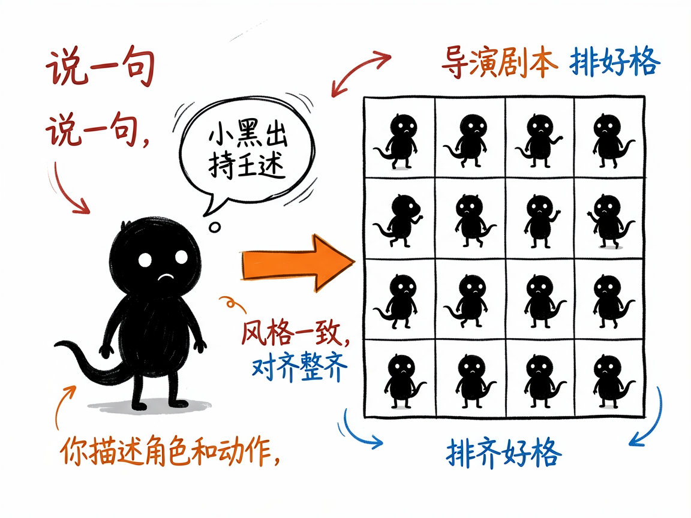
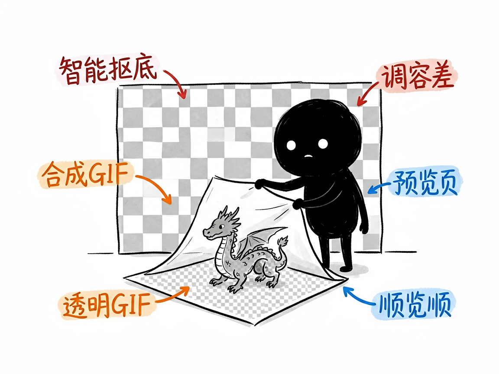

想给游戏做个会动的小角色？说一句话它帮你生成精灵图动画 —— sprite-gen 介绍
你在做小游戏、做动效，需要一个会走路、会攻击的小角色动画。过去这得找美术一张张画帧、再拼成"精灵图"（sprite sheet，就是把一连串动作帧排在一张图里）。你既不会画，也不想折腾一堆第三方付费工具。
sprite-gen 就是来解决这件事的。
它让你用一段文字描述角色和动作（比如"一只萌萌的小龙，走路循环"），自动生成一张排好格子的精灵图，并切成一帧帧、合成成会动的 GIF，还附一个能在浏览器里预览的页面。你给它一句描述，它还你一套能直接塞进游戏里的动画素材。

它到底能做什么
- 文字生成角色：你描述长相、风格、动作类型（走 / 攻击 / 待机 / 施法 / 跳舞），它先"导演"出一版具体剧本再出图。
- 生成整齐的格子图：一张方图里排好 N×N 个动作帧（默认 4×4=16 帧），每格角色一致、对齐整齐，方便游戏引擎切片。
- 智能去背景：生成的图往往带杂色背景或水印，它会自动识别并抠掉，保留透明底，方便叠到游戏场景里。
- 切成帧 + 合成 GIF：自动把大图切成单帧，再合成成带透明度的动画 GIF。
- 出预览页：生成一个网页，棋盘格背景上看 GIF 和每一帧，方便你检查动作顺不顺。

怎么用
你不需要记任何命令。在 codex / workbuddy 等 agent 装好 sprite-gen 技能后，直接对 AI 说话就行： 场景 1：一句话生成会走路的小龙 你：帮我生成一只萌萌的小龙走路循环动画，四方向都来一份。 AI：它先写出具体的动作剧本，再生成一张排好格子的精灵图，自动抠掉背景、切成帧并合成成会动的 GIF，还给你一个能预览每一帧的网页。 场景 2：检查动作顺不顺、再调 你：这个攻击动作有点卡，能帮我重新生成一版更流畅的，帧数再多一点吗？ AI：它按你的反馈重新出图、重排格子、重新合成，把新一版 GIF 和预览页发还给你比对。 场景 3：给现有角色加个施法动作 你：我已经有主角的精灵图了，再帮我补一套"施法"的动作帧，风格保持一致。 AI：它参照你已有的角色风格，生成一套对齐整齐的施法动作帧，接进原来的图里就能用。
谁适合用
- 做独立游戏、小游戏，需要角色动画素材的开发者。
- 想快速试验"某个角色动起来啥样"的原型玩家。
- 做 AI 工具、要把"文字生成游戏动画"做成能力的人。
一点说明
它核心靠 AI 生图能力出图，再由技能自动完成切图、去背景、合成 GIF。由于 AI 生图目前不能保证透明背景，它内置了"自动抠背景"来补救，但复杂背景偶尔会有瑕疵，可能需要换生成策略。它产出的是素材，最终游戏手感还得你来调。具体能力以项目文档为准。